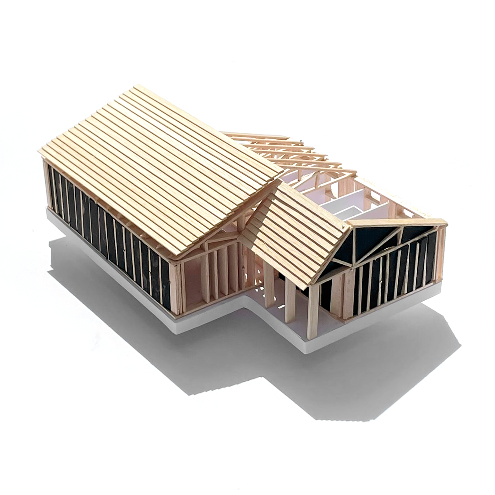
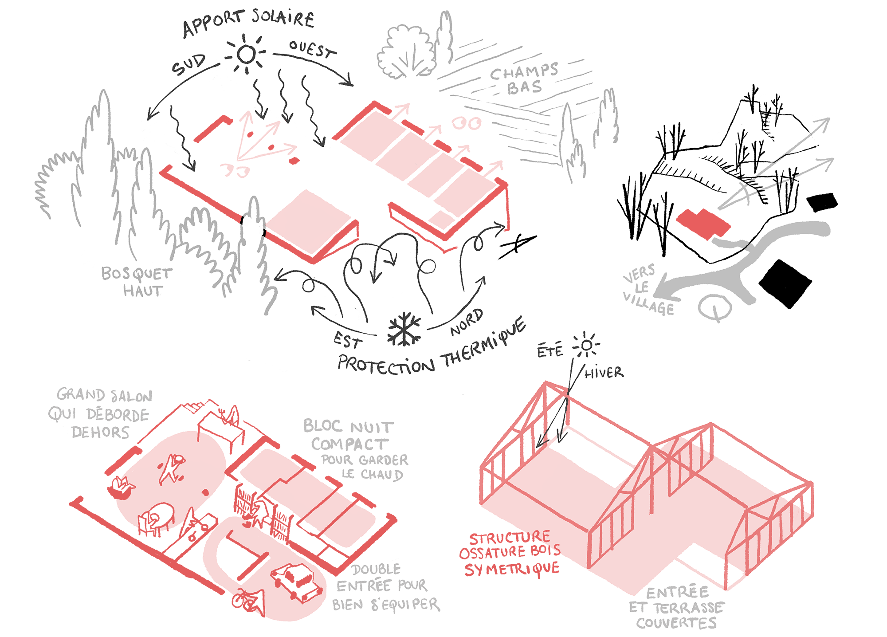
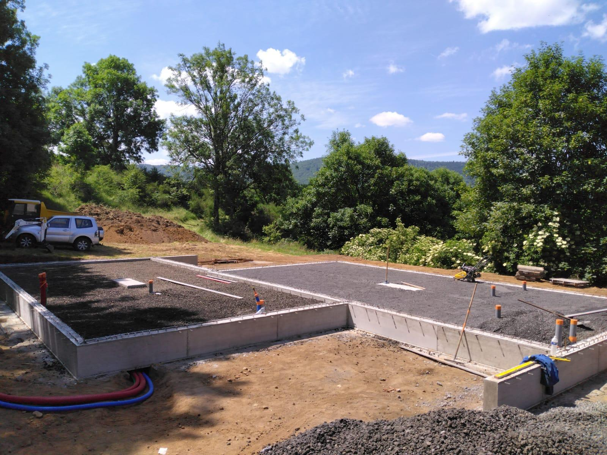
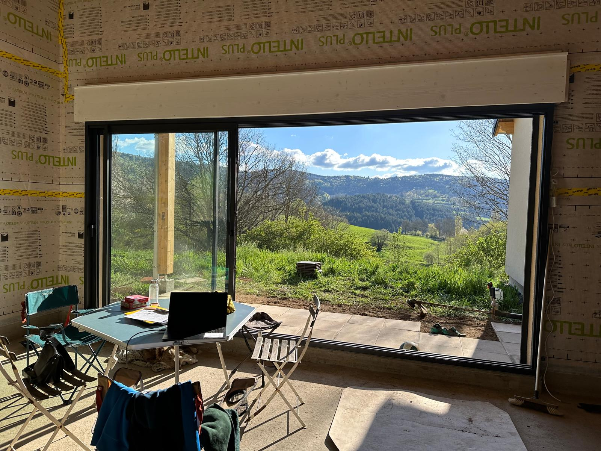
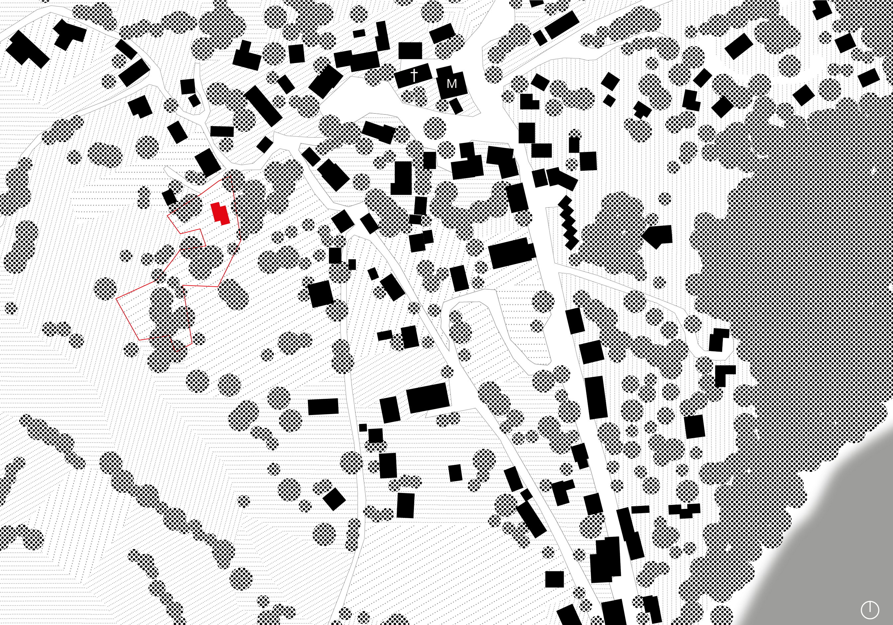
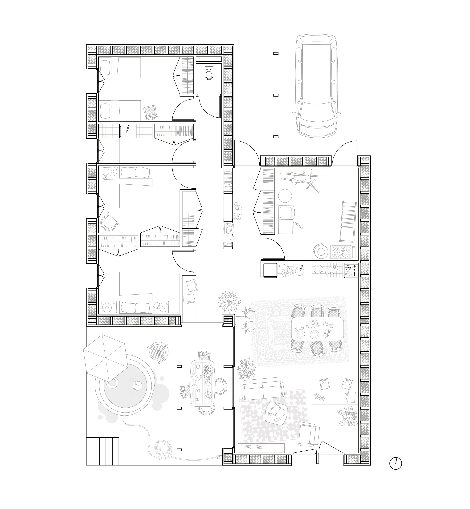
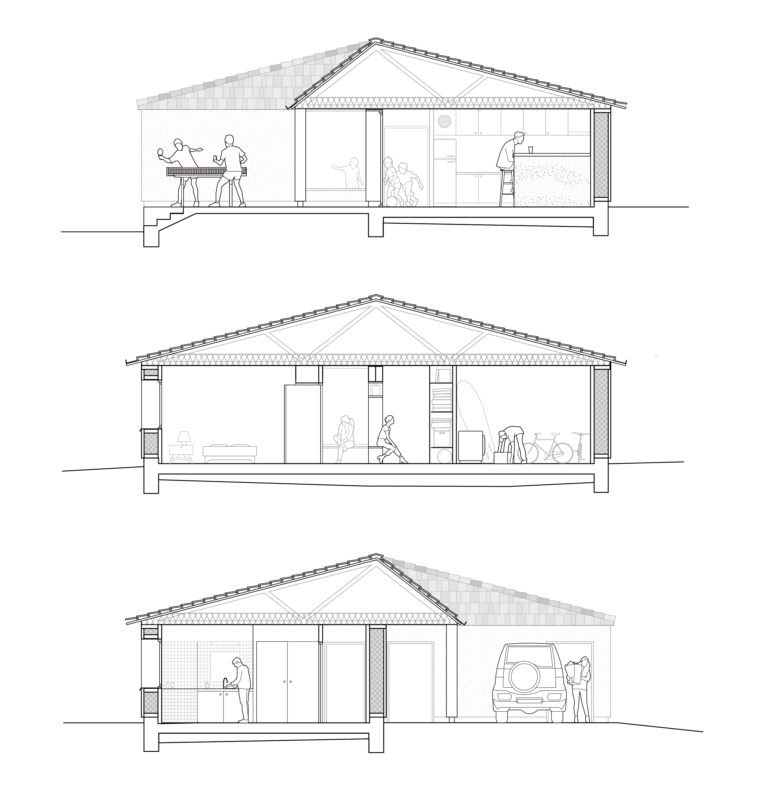

client : privé
date : mai 2023
mission : études > PC
type : logement

Conçue pour un usage ponctuel aux beaux jours, la maison est entièrement pensée selon des principes d'efficacité et de passivité thermique. L'entièreté des ouvertures sont au Sud et à l'Ouest pour faciliter la prise de chaleur via l'apport solaire et au contraire tourner le dos aux vents froids venant du Nord et de l'Est. Le recours à des murs ossature bois isolés en paille et un chauffage au sol assure un maitien de la température au sein de l'édifice la nuit, en effet la haute altitude du projet lui fait endurer de grands différenciels de température avec le jour.

Le plan de la maison découle de la simplicité de son système de construction. En employant des profils symétriques entre le bloc jour et le bloc nuit, le projet développe une double circulation centrale qui permet de multiplier les placards de stockage, essentiels pour une maison de vacance. L'entrée est dédoublée, donnant soit directement dans le couloir ou passant par une grande buanderie permettant de stocker les VTT et autres engins sportifs. En face, les chambres sont regroupées et donnent toutes vers l'Est où le grand terrain de la famille descend doucement vers les champs en contrebas.




